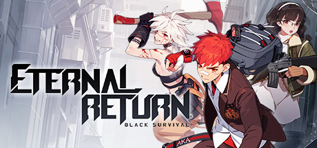

- List1
- List2
- List3
블랙서바이벌 영원회귀 리뷰

[ 게임 그래픽 ]
전체적으로 강한 색감과 그에 반하는 절제된 깔끔한 이펙트가 눈에 띈다.
처음 게임을 접했을 때 맵과 오브젝트, 캐릭터 간의 구분이 매우 쉽고 눈이 피로하지 않았다.
직관성과 가시성을 최대한 살린 모습이다.
한 필드에 다양한 테마의 구역이 있어 지루하지 않으며, 각 구역에 배치된 오브젝트도 테마와 잘 어우러진다.
[ 게임 사운드 ]
좋게 말하면 절제되고 깔끔하며 개성이 있다.
나쁘게 말하면 사운드가 풍성하거나 화려하지 않다.
사운드 플레이를 하기에는 최적화 되어있으나, 전체적으로 조용하다.
[ 게임 시스템 ]
배틀로얄의 아이덴티티인 파밍과 생존 , MOBA의 파밍과 전투를 적절하게 섞었다.
파밍과 전투 둘다 쉽고 재밌었으며 좁은 맵, 짧은 파밍, 잦은 조우 덕분에 배틀로얄 특유의 지루한 구간을 최소화한 느낌이다.
[ 게임 접근성 ]
전반적으로 게임의 진입장벽을 낮추기 위해 많은 공을 들였다는게 느껴졌다.
파밍 관련해서 살펴보면
게임 시작전에 파밍루트를 미리 정할 수 있고, 다른사람이 만든 파밍루트도 쉽게 가져올 수 있어서 파밍으로 헤매는 일이 없다.
또한 모든 아이템이 둘을 조합하면 하나가 나오는 1+1= 1의 조합을 따라가기 때문에 조합식이 간단하며.
실시간으로 자신이 필요한 재료를 표시해 주는 인터페이스들이 있어 생소한 파밍 시스템을 쉽게 따라오게 설계한 느낌이다.
전투 관련해서는
전체적으로 캐릭터들의 전투 스킬이 직관적이고 간단하여 신경쓸 요소가 적고
근처에 적이 있으면 위험 핑으로 플레이어에게 알려주며
주변 지역을 밝혀주는 CCTV의 존재 덕분에 기습의 위험이 적다.
따라서 파밍을 얼마나 잘했는지, 스킬을 얼마나 잘 쓰는지가 승패 여부에 큰 비중을 차지한다.
게임의 핵심인 파밍과 전투에서 진입장벽을 낮추기 위해 한 많은 고민들이 보였다.
덕분에 게임에 쉽게 적응하고, 편하게 즐길 수 있었다.
하지만 쉬운 조작감이 독이 되기도 한다. 특히 리그오브레전드로 인해 MOBA에 노련한 게이머들은 캐릭터의 스킬이 너무 간단하고 쉽다고 생각할 것이다.
이는 자칫 전투가 루즈하다고 느껴질 수 있는데 , 이를 개발사에서도 인지했는지 최근에 나오는 캐릭터들의 스킬은 난이도가 점점 높아지는 중이다.
[ 과금/무과금 ]
캐릭터를 빠르게 해금하거나, 캐릭터의 스킨을 살 때 과금으로 얻는 재화를 사용한다.
일일퀘스트를 수행하거나, 한 게임이 끝날 때 마다 주는 재화로도 캐릭터는 충분히 해금이 가능하기에 스킨을 구매할 의향이 없으면 무과금으로도 충분히
즐길 수 있다.
[ 게임 운영 ]
스트리머를 모니터링 하다가 패작, 저격하는 비매너유저들을 실시간으로 정지를 먹이거나,
디스코드 채널을 개설하고 여러 커뮤니티에서 의견을 적극 수렴하는 등 운영에 있어 상당히 유연한 모습을 보여주나
한편으로는 중심이 없고 가벼운 느낌을 주기도 한다. 이에 관련한 논란도 여럿 생겼을 정도
빠른 업데이트와 잦은 패치는 게임의 활력을 나타내주기도 한다.
[ 전반적인 평가 ]
낮은 진입장벽과 짧은 플레이타임으로 가볍게 입문해서 가볍게 즐길 수 있는 게임이다.
서브컬쳐적인 요소가 강하다 보니 호불호가 갈린다.
친구들과 가볍게 즐기기에도 괜찮다.